Part 2 · Signs · Chapter 2F
Toll Road Signs
Regulatory, warning, and guide signs specific to toll highways, bridges, and tunnels — toll plaza lane control, Electronic Toll Collection (ETC) account-only messaging, purple-panel conventions, and advance signing for conventional and open-road tolling configurations. Except where this Chapter provides specific provisions, the general sign requirements of the other Part 2 chapters (2A–2E) apply to toll facilities.
2F.01Scope
- 01Toll highways are typically limited-access freeway or expressway facilities. A portion of, or an entire, route might be a toll highway, or a bridge, tunnel, or other crossing point might be the only toll portion of a highway at which a toll is collected. A toll highway might also be a conventional road. General signing requirements for toll roads depend on the type of facility and access (freeway, expressway, or conventional road). Chapters 2D and 2E generally apply for guide signs along the toll facility that direct road users within and off the facility where exit points and geometric configurations are not dependent specifically on toll collection. The presence of toll plazas or collection points necessitates additional considerations, and notification of toll collection in advance of and at entry points also necessitates modifications to typical signing.
- 02The scope of this Chapter applies to a route or facility on which all lanes are tolled. Chapter 2G contains provisions for signing of managed lanes within an otherwise non-toll facility that employ tolling or pricing as an operational strategy to manage congestion levels.
- 03Except where specifically provided in this Chapter, the provisions of other Chapters in Part 2 shall apply to toll roads.
2F.02Sizes of Toll Road Signs and Electronic Toll Collection (ETC) System Pictographs
- 01Except as provided in Section 2A.07, the minimum sizes of toll road signs that have standardized designs shall be as shown in Table 2F-1.
- 02Section 2A.07 contains information regarding the applicability of the various columns in Table 2F-1.
- 03Signs larger than those shown in Table 2F-1 may be used (see Section 2A.07).
- 04The ETC system pictograph (see Section 2A.04) shall be of a size that makes it a prominent feature of the sign legend as necessary for conspicuity for road users with registered ETC accounts seeking such direction, as well as for those without ETC accounts, so it is clear to them to avoid such direction when applicable.
- 05Except as provided in Paragraph 6, an ETC pictograph shaped as a horizontally-oriented rectangle should have a minimum height of 1.5 times the upper-case letter height of the principal legend on the sign. The width of a horizontal-rectangle ETC pictograph should be between approximately 2 and 3 times the height of the pictograph.
- 06When the pictograph is the principal legend on the sign, such as for advance guide signs for open-road tolling lanes (see Section 2F.15), the minimum height of a horizontally-oriented rectangular ETC pictograph should be consistent with that of a route shield prescribed for the particular application and type of sign.
- 07For ETC pictographs whose shape is square, circular, or otherwise similar in height and width, or is a vertically-oriented rectangle, the same basic principles for conspicuity and placement should be followed. These pictographs should be suitably sized to facilitate conspicuity as described in Paragraph 4 and should be of a similar approximate area as horizontally-oriented rectangular pictographs sized per Paragraph 5.
2F.03Use of Color on Toll Signs
- 01Use of the color purple on any sign shall comply with Sections 1D.05 and 2A.06. Except as provided in Sections 2F.05 and 2F.16, purple as a background color shall be used only when the information associated with the appropriate ETC account is displayed on that portion of the sign. The background color of the remaining portion of such signs shall comply with Sections 1D.05 and 2A.06 as appropriate for a regulatory, warning, or guide sign. Purple shall not be used as a background color to display a destination, action message, or other legend that is not a display of the requirement for all vehicles to have a registered ETC account.
- 02If only vehicles with registered ETC accounts are allowed to use a highway lane, a toll plaza lane, an open-road tolling lane, or all lanes of a toll highway or connection, the guide signs for such lanes or highways shall incorporate the pictograph (see Section 2A.04) adopted by the toll facility's ETC payment system and the regulatory message ONLY. Except for ETC pictographs whose predominant background color is purple, if incorporated within the green background of a guide sign, the ETC pictograph shall be on a white rectangular or square panel set on a purple underlay panel with a white border. For rectangular ETC pictographs whose predominant background color is purple, a white border shall be used at the outer edges of the purple rectangle to provide contrast between the pictograph and the sign background color.
- 03If an ETC pictograph is used on a separate plaque in a route sign assembly (see Section 2F.05) or on a header panel within a guide sign, the plaque or header panel shall have a purple background with a white border, and the ETC pictograph shall have a white border to provide contrast between the pictograph and the background of the plaque or header panel.
- 04Purple underlay panels for ETC pictographs or purple backgrounds for plaques and header panels shall only be used as described in Paragraphs 1 through 3 to convey the requirement of a registered ETC account on signs for lanes reserved exclusively for such accounts and on directional signs to an ETC account-only facility from a non-toll facility or from a toll facility that accepts multiple payment forms.
- 05Figure 2F-1 shows examples of ETC account pictographs, their use with various background colors, and modifications involving underlay panels.
- 06Section 2F.02 contains provisions regarding the size of pictographs for ETC accounts.
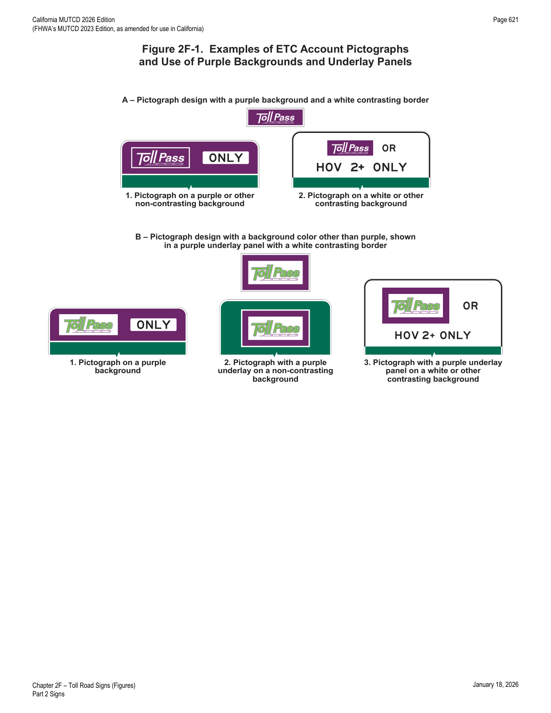
In practice: the purple-panel rule is the single most distinctive visual convention in this chapter — purple appears only to signal "registered ETC account required," never as a decorative accent or general toll-branding color.
2F.04Regulatory Signs for Toll Plazas
- 01Toll plaza operations often include lane-specific restrictions on vehicle type, forms of payment accepted, and speed limits or required stops. Vehicles are typically required to stop to pay the toll or receive a toll ticket in attended and exact-change/automatic lanes. ETC lanes with favorable geometrics typically allow vehicles to move through without stopping, usually within a set regulatory or advisory speed. In some ETC lanes and most non-ETC lanes, a stop might still be required while payment is processed because of geometric or other conditions.
- 02Regulatory signs applicable only to a particular lane or lanes should be located so their lane applicability is clear to approaching road users.
- 03Regulatory signs, or regulatory panels within guide signs, indicating restrictions on vehicle type and forms of toll payment accepted at a specific lane should be installed over the applicable lane either on the toll plaza canopy or on a separate structure immediately in advance of the canopy, in a manner clearly relating each sign to an individual toll lane.
- 04Section 2F.12 contains information regarding incorporation of regulatory messages into guide signs for toll plazas.
- 05Section 2F.16 contains information regarding design and use of toll plaza canopy signs.
- 06One or more Speed Limit (R2-1) signs (see Section 2B.21) should be installed in the locations provided in Paragraph 8 for an ETC-Only lane at a toll plaza where an enforceable regulatory speed limit is established for a lane in which vehicles move through without stopping while other lanes require stops. The displayed speed limit should be based on an engineering study accounting for the geometry of the toll plaza and lanes and other safety/operational factors.
- 07A Speed Limit (R2-1) sign should not be installed for a toll plaza lane controlled by a STOP (R1-1) sign or where a stop is required.
- 08Where speed limit signs are installed over a toll plaza lane on the canopy, on the approach end of the toll booth island, on the toll booth itself, or on a vertical canopy element, down arrows or diagonally downward-pointing directional arrows should be used to supplement the signs if needed to clarify lane applicability or improve compliance.
- 09A STOP (R1-1) sign shall not be installed for a toll plaza lane operated as an ETC-Only lane designed for tolls to be collected while vehicles continue moving.
- 10A STOP (R1-1) sign may be installed to require all vehicles to come to a complete stop to pay a toll in an attended or exact-change lane, even if the lane is also available for optional use by registered-ETC vehicles. A PAY TOLL (R3-29P) or TAKE TICKET (R3-30P) plaque (see Figure 2F-2) may be installed directly under the STOP sign for a toll plaza lane, if needed.
- 11The mounting height of the STOP sign and any supplemental plaque may be less than normal mounting height requirements if constrained by the physical features of the toll island or plaza.
- 12The lateral offset of a STOP or other regulatory sign within a toll plaza island may be reduced to a minimum of 1 foot from the face of the toll island or raised barrier to the nearest edge of the sign.
- 13If used, a STOP (R1-1) sign for a toll plaza cash payment lane should be located as near as practical to the point where a vehicle is expected to stop to pay the toll or take a ticket.
- 14A Toll Rate (R3-28) sign (see Figure 2F-2) may be installed in advance of the toll plaza to indicate the toll applicable to the various vehicle types.
- 15If used, the Toll Rate (R3-28) sign should be located between the toll plaza and the first advance sign informing road users of the plaza.
- 16The R3-28 sign should not contain more than three lines of legend. Each line showing a toll amount should display only a single toll amount.
- 17Additional toll rate information exceeding three lines may be displayed on the toll booth adjacent to the payment window of an attended lane or the payment receptacle of an exact-change/automatic lane where visible to a road user who has stopped to pay, but not visible to approaching road users who have not yet entered the toll lane.
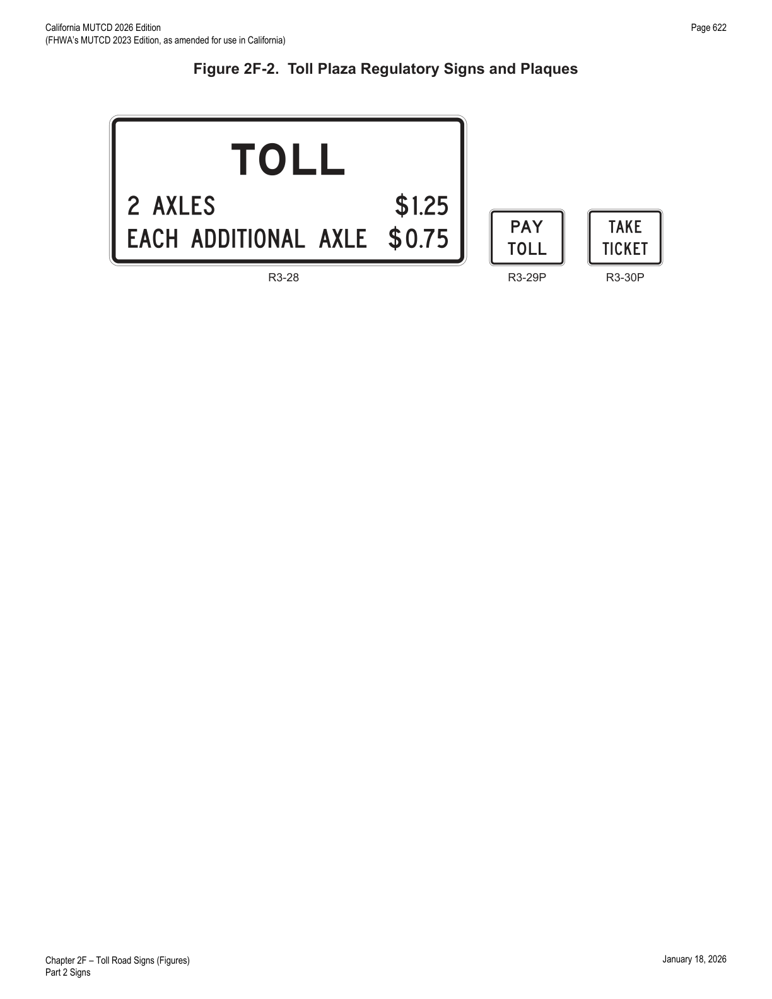
2F.05Electronic Toll Collection (ETC) Account-Only Regulatory Sign and Plaque (R3-31 and R3-32P)
- 01In any route sign assembly providing directions to a toll facility, or to a tolled segment of a highway, where ETC is the only payment method accepted and all vehicles must have a registered ETC account, the ETC Account-Only (R3-31) sign (see Figure 2F-3) shall be mounted directly below the route sign of the numbered or named toll facility. The R3-31 sign shall have a white border and purple background and incorporate the pictograph adopted by the toll facility's ETC payment system plus the word ONLY in black letters on a white panel set on the purple background.
- 02The NO CASH (R3-32P) plaque (see Figure 2F-3), with black legend and border on a white background, may be mounted directly below the R3-31 sign in a Directional or other sign assembly.
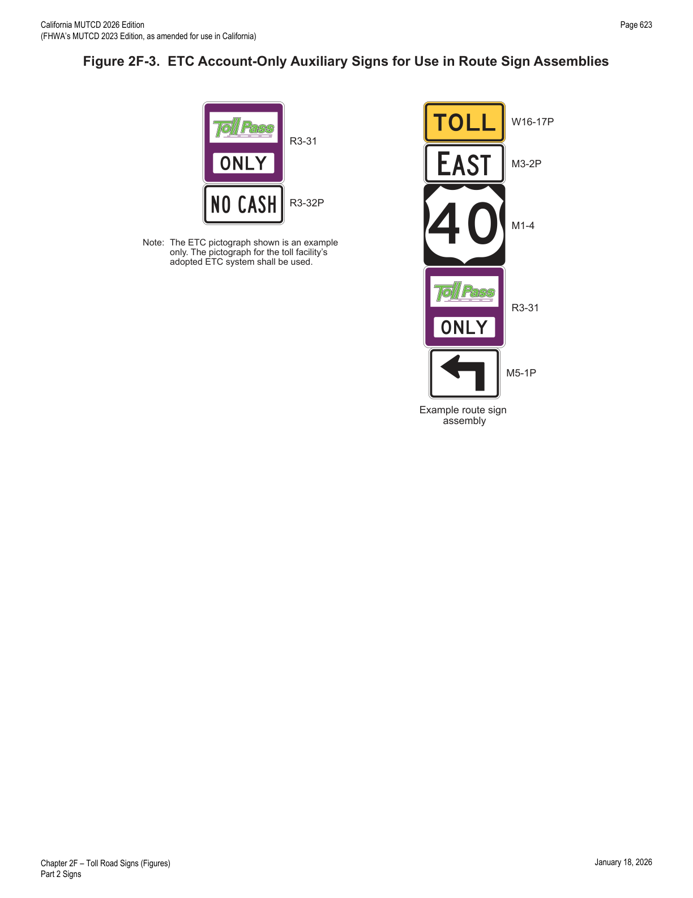
2F.06Pay Toll and Take Ticket Advance Warning Signs (W9-6 and W9-6e)
- 01The Pay Toll (W9-6) and Take Ticket (W9-6e) Advance Warning signs shall display the distance to the toll plaza and, except for toll-ticket facilities, the toll for passenger or 2-axle vehicles (see Figure 2F-4). Where the toll for such vehicles is variable by time of day, a changeable message element shall be incorporated into the W9-6 sign to display the toll in effect.
- 02The Pay Toll Advance Warning (W9-6) sign should be installed at approximately 1 mile and ½ mile in advance of mainline toll plazas at which some or all lanes require a stop to pay a toll (see Sections 2F.14 and 2F.15).
- 03The Take Ticket Advance Warning (W9-6e) sign should be installed overhead at approximately 1 mile and ½ mile in advance of mainline toll plazas at which some or all lanes require a stop to take a toll ticket (see Sections 2F.14 and 2F.15).
- 03aRefer to FHWA's List of Known Errors for an error in the Paragraph 3 text. Refer to Section 1A.04 for more details.
- 04The Pay Toll and Take Ticket Advance Warning signs should be mounted overhead.
- 05If there is insufficient space for the W9-6 or W9-6e sign at the 1-mile or ½-mile advance location, the Pay Toll or Take Ticket Advance Warning (W9-6bP or W9-6gP) plaque (see Section 2F.07) may be installed at those advance locations above the appropriate guide sign(s) that relate to toll payment types.
- 05aThe W9-6bP and W9-6gP plaques may be formatted as a header panel within the guide sign.
- 06An additional W9-6 or W9-6e sign may be installed approximately 2 miles in advance of a mainline toll plaza. This sign may be mounted either overhead or post-mounted.
- 07If the visibility of a ramp toll plaza at which some or all lanes require a stop to pay a toll or take a ticket is limited, the W9-6 or W9-6e sign may also be installed in advance of the ramp toll plaza.
2F.07Pay Toll and Take Ticket Advance Warning Plaques (W9-6bP, W9-6dP, and W9-6gP)
- 01The Pay Toll or Take Ticket Advance Warning (W9-6bP and W9-6gP) plaques (see Figure 2F-4) may be installed above the appropriate guide sign(s) relating to toll payment types at the 1-mile and/or ½-mile advance locations on the approach to a toll plaza if there is insufficient space for the W9-6 or W9-6e sign (see Section 2F.06) at those locations.
- 01aThe W9-6bP and W9-6gP plaques may be formatted as a header panel within the guide sign.
- 02The W9-6bP and W9-6gP plaques shall display the distance to the toll plaza and, except for toll-ticket facilities, the toll for passenger or 2-axle vehicles. Where that toll is variable by time of day, a changeable message element shall be incorporated into the W9-6bP plaque to display the toll in effect.
- 03The distance to the toll plaza may be omitted from the W9-6bP and W9-6gP plaques if the distance is displayed on the guide sign that the plaque accompanies.
- 04The Pay Toll (W9-6dP) plaque may be used if the toll information is displayed on the guide sign that the plaque accompanies.
- 05The toll for passenger or 2-axle vehicles may be omitted from the W9-6bP plaque if the toll information is displayed on the guide sign that the plaque accompanies.
2F.08Stop Ahead Pay Toll and Stop Ahead Take Ticket Warning Signs (W9-6a and W9-6f)
- 00Refer to FHWA's List of Known Errors for an error in the Section title. Refer to Section 1A.04 for more details.
- 01The Stop Ahead Pay Toll (W9-6a) warning sign (see Figure 2F-4) shall display the toll for passenger or 2-axle vehicles. Where the toll is variable by time of day, a changeable message element shall be incorporated into the W9-6a sign to display the toll in effect.
- 02The Stop Ahead Pay Toll (W9-6a) sign should be installed downstream from the W9-6 sign that is ½ mile in advance of a mainline toll plaza where some or all lanes require a stop to pay a toll (see Sections 2F.14 and 2F.15).
- 03The Stop Ahead Take Ticket (W9-6f) warning sign (see Figure 2F-4) should be installed downstream from the W9-6e sign that is ½ mile in advance of a mainline toll plaza where some or all lanes require a stop to take a toll ticket (see Sections 2F.14 and 2F.15).
- 03aRefer to FHWA's List of Known Errors for an error in the Paragraph 3 text. Refer to Section 1A.04 for more details.
- 04The W9-6a and W9-6f signs should be mounted overhead. The overhead sign location should coincide with the approximate point where the mainline lanes begin to widen on the approach to the toll plaza lanes.
- 05Where open-road tolling is used in addition to a toll plaza at a location, the W9-6a or W9-6f sign should be located so the message is clearly related to the lanes that access the toll plaza, not the open-road tolling lanes.
- 06If there is insufficient space for the W9-6a or W9-6f sign at the recommended location, the Stop Ahead Pay Toll (W9-6cP) or Stop Ahead Take Ticket (W9-6hP) plaque (see Section 2F.09) may be installed at that location above the appropriate guide sign relating to toll payment types.
- 06aThe W9-6cP and W9-6hP plaques may be formatted as a header panel within the guide sign.
- 07If the visibility of a ramp toll plaza at which some or all lanes require a stop to pay a toll or take a ticket is limited, the W9-6a or W9-6f sign may also be installed in advance of the ramp toll plaza.
2F.09Stop Ahead Pay Toll and Stop Ahead Take Ticket Warning Plaques (W9-6cP and W9-6hP)
- 00Refer to FHWA's List of Known Errors for an error in the Section title. Refer to Section 1A.04 for more details.
- 01The Stop Ahead Pay Toll (W9-6cP) warning plaque (see Figure 2F-4) may be installed above the appropriate guide sign at the location specified for the W9-6a sign (see Section 2F.08) if there is insufficient space for the W9-6a sign at that location and the toll information is displayed on the guide sign that the plaque accompanies.
- 02The Stop Ahead Take Ticket (W9-6hP) warning plaque (see Figure 2F-4) may be installed above the appropriate guide sign at the location specified for the W9-6f sign (see Section 2F.08) if there is insufficient space for the W9-6f sign at that location.
- 02aRefer to FHWA's List of Known Errors for an error in Paragraph 2. Refer to Section 1A.04 for more details.
- 03The W9-6cP and W9-6hP plaques may be formatted as a header panel within the guide sign.
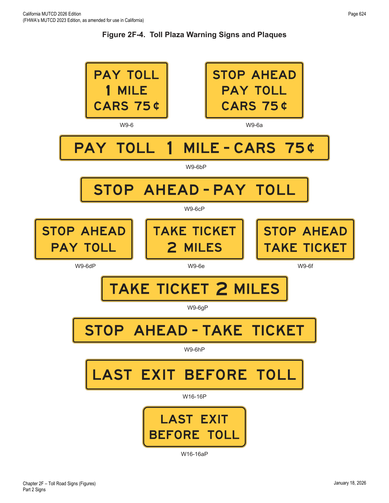
2F.10LAST EXIT BEFORE TOLL Warning Plaques (W16-16P and W16-16aP)
- 01The LAST EXIT BEFORE TOLL (W16-16P or W16-16aP) warning plaque (see Figure 2F-4) should be used to notify road users of the last exit from a highway before it becomes a facility on which toll payments are required. The plaque should be installed above the appropriate guide signs for the exit (see Sections 2E.23 and 2E.25), but below the Exit Number or LEFT plaque if used.
- 02The W16-16P plaque may be formatted as a header panel within the guide sign.
2F.11TOLL Warning Plaque (W16-17P)
- 01The TOLL (W16-17P) warning plaque (see Figure 2F-3) shall have a black legend and border on a yellow background and shall be mounted directly above the route sign of a numbered toll highway or, if used, above the cardinal direction and alternative route auxiliary signs, in any route sign assembly providing direction to a toll highway or to a segment of a highway on which payment of a toll is required.
2F.12Toll Facility and Toll Plaza Guide Signs — General
- 01Toll plazas are used on many toll highways, bridges, and tunnels to collect tolls from road users. Electronic toll collection and/or open-road tolling might also be used, either in addition to or in place of collecting toll payments at toll plazas.
- 02Chapter 2G contains information regarding signs for preferential and managed lanes that are applicable to toll roads.
- 03Chapter 3E contains information regarding pavement markings for certain toll plaza applications.
- 04Directional assemblies for entrances to a toll highway, or to a road leading directly to a toll highway with no opportunity to exit before paying or being charged a toll, shall clearly indicate that the facility is a toll facility. Except where the State Toll Route sign (see Paragraph 8) is used, the TOLL (W16-17P) warning plaque (see Section 2F.11) shall be used above the route sign of a numbered toll facility in any route sign assembly that provides directions to the toll route from another highway (see Figures 2F-5, 2F-6, and 2F-101(CA)).
- 05Except where the State Toll Route sign (see Paragraph 8) is used, and on Exit Gore signs or destination guide (D1 series) signs, a rectangular panel with the black legend TOLL on a yellow background shall be incorporated into the guide signs leading road users to a tolled highway (see Figures 2F-6 through 2F-8).
- 06Guide signs for toll highways, toll plazas, and tolled or priced managed lanes (see Chapter 2G) shall have white legends and borders on green backgrounds, except as specifically provided by Sections 2F.12 through 2F.16.
- 07A State Toll Route sign (see Paragraph 8) may be used in lieu of the State Route (M1-5) sign in combination with the TOLL (W16-17P) warning plaque or the TOLL panel (see Paragraphs 10 and 11).
- 08A State Toll Route sign shall incorporate into its design the word TOLL using the same letter height, legend, background colors, and overall plaque dimensions specified for the W16-17P warning plaque.
- 09The Interstate, Off-Interstate, and U.S. Route signs shall not be modified for tolled facilities.
- 10Where conditions do not accommodate separate signs, or where it is important to associate a particular regulatory or warning message with specific guidance information, regulatory and/or warning messages may be combined with guide signs for toll plazas using plaques, header panels, or rectangular regulatory or warning panels incorporated within the guide signs, as long as the proper legend and background colors are preserved.
- 11When regulatory messages are incorporated within a guide sign, they shall be on a rectangular panel with a black legend on a white background. When warning messages are incorporated within a guide sign, they shall be on a rectangular panel with a black legend on a yellow background.
- 12Guide signs for toll plazas should be designed in accordance with the general principles of guide signs and the specific provisions of Chapter 2E.
- 13Signs for toll plazas should systematically provide road users with advance and toll-plaza-lane-specific information regarding: (A) the amount of the toll, the types of payment accepted, and the type(s) of registered ETC accounts accepted for payment; (B) which lane or lanes are required or allowed for each available payment type; and (C) restrictions on the use of a toll plaza lane or lanes by certain types of vehicles (such as cars only or no trucks).
- 14Signs for attended lanes at toll plazas shall incorporate the Toll Collector (M4-17) symbol panel (see Figure 2F-9).
- 15Signs for attended lanes at toll plazas may also display word legends, such as FULL SERVICE, CASH, CHANGE, or RECEIPTS (see Figure 2F-9), to supplement the required symbol panel when lanes have different services available.
- 16Signs for Exact Change lanes at toll plazas shall incorporate the Exact Change (M4-18) symbol panel and, except for ticketed systems, display the amount of the toll for passenger vehicles (see Figure 2F-9).
- 17Signs for Exact Change lanes at toll plazas may include an appropriate word legend, such as EXACT CHANGE (see Figure 2F-9), to supplement the required symbol panel.
- 18When used, the M4-17 and M4-18 symbol panels shall be used only as panels within guide signs. They shall not be used as an independent sign or within a sign assembly.
- 19If only vehicles with registered ETC accounts are allowed to use a toll plaza lane, the signs for such lanes shall incorporate the pictograph adopted by the toll facility's ETC payment system and the regulatory message ONLY (see Figures 2F-1 and 2F-8 through 2F-11). The use, size, and placement of the ETC pictograph shall comply with Sections 2F.02 and 2F.03.
- 20An Overhead Arrow-per-Lane guide sign (see Figure 2F-10) shall be used in advance of a location where the mainline lanes split to separate traffic entering Open-Road ETC lanes from lanes entering a toll plaza where other payment methods are accepted and an option lane is provided at the split (see Figure 2F-11). An Overhead Arrow-per-Lane guide sign shall not be used if there is no option lane at the split.
- 21The ETC payment system's pictograph, without a purple underlay or purple header panel, may be used on signs for Exact Change or attended lanes at toll plazas to indicate that vehicles with registered ETC accounts may also use those lanes.
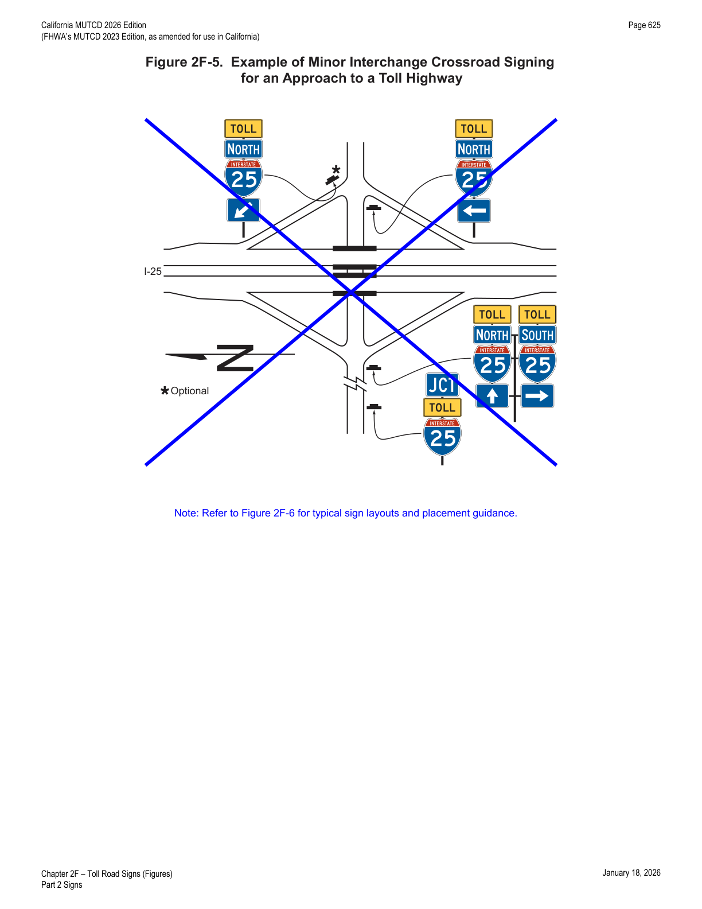
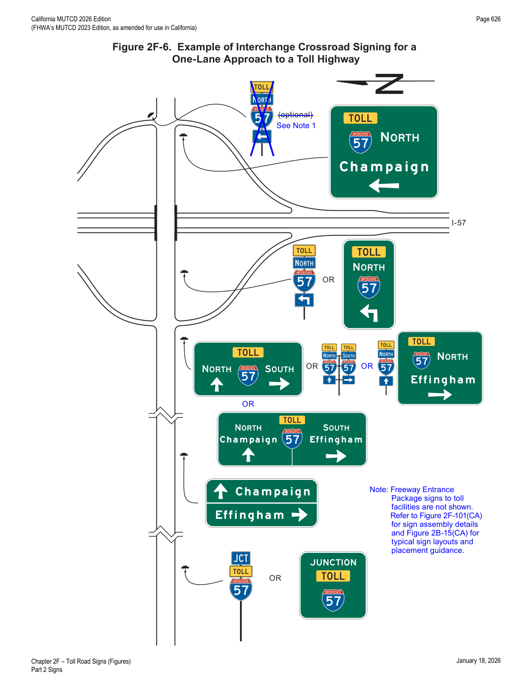
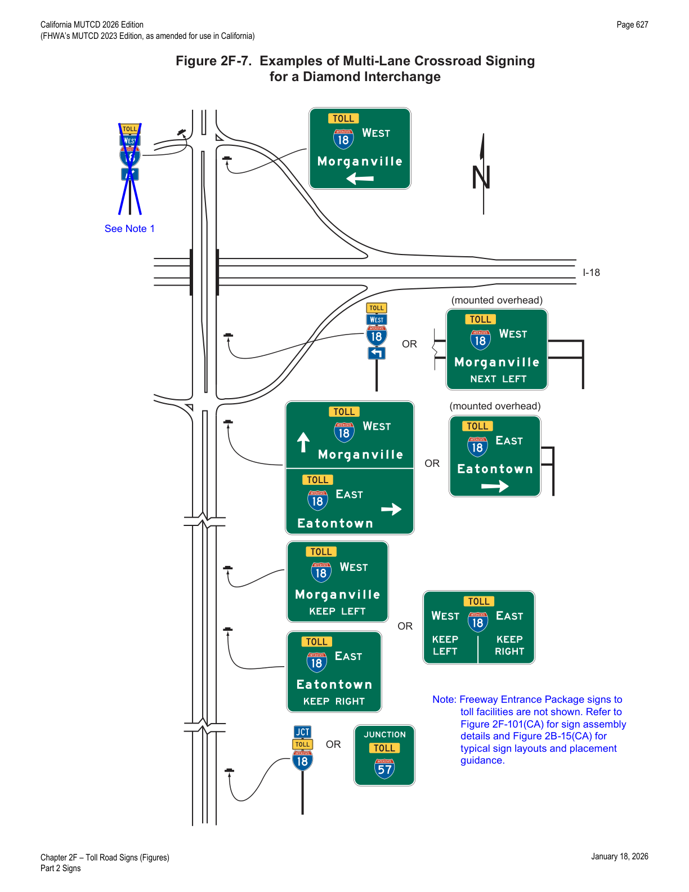
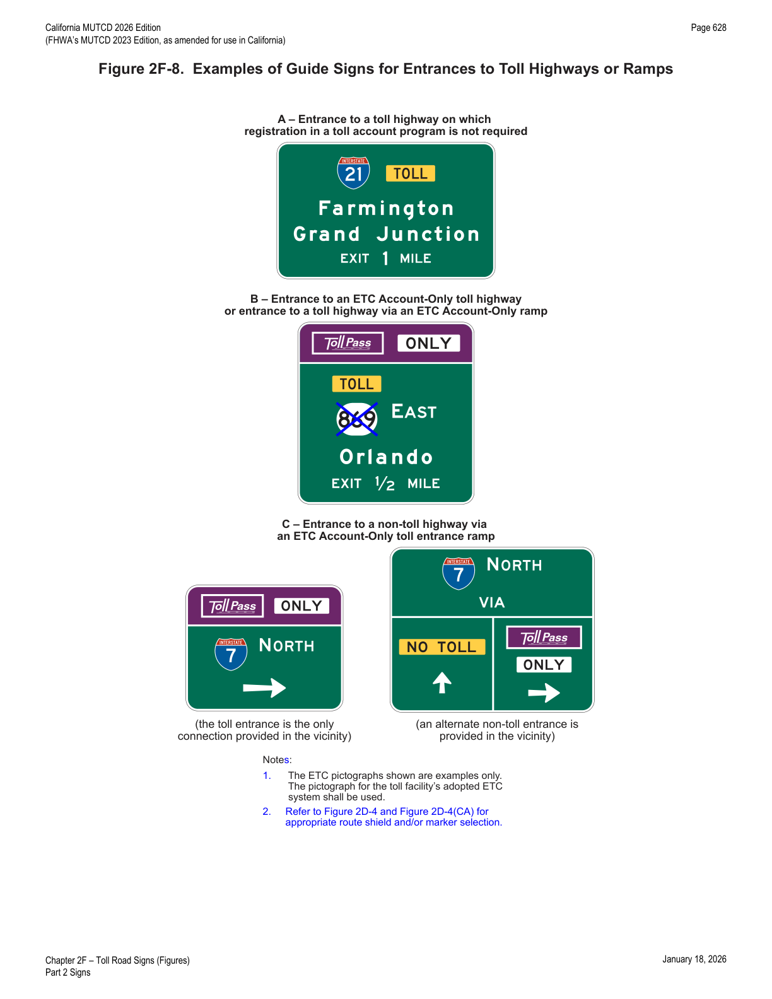
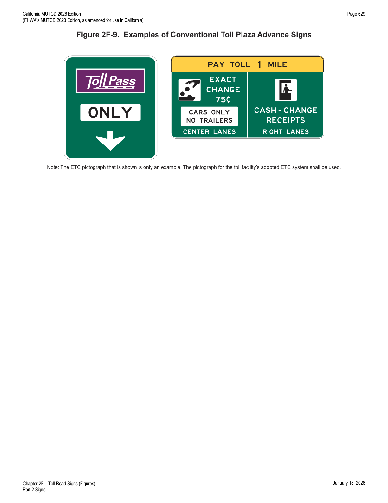
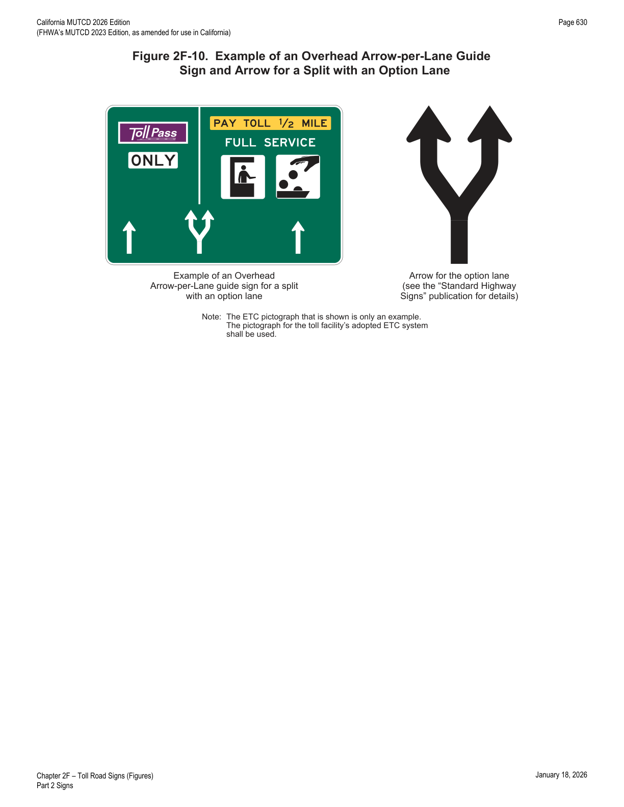
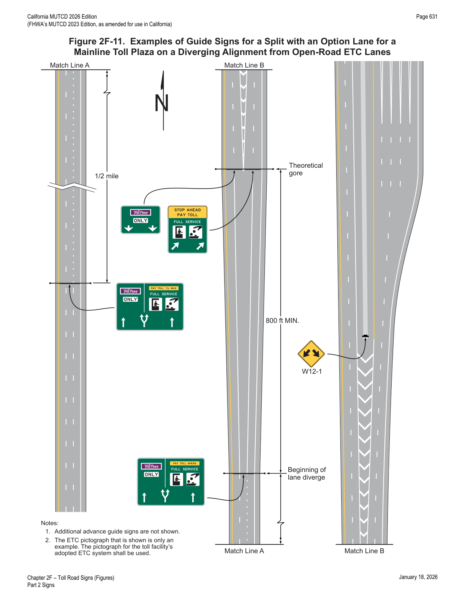
2F.13Electronic Toll Collection (ETC) Signs — General
- 01Figure 2F-8 shows examples of guide signs for entrances to various types of toll highways and for ETC account-only entrances to non-toll highways.
- 02Signing for entrances to toll highways where ETC is employed only through license plate character recognition — such that road users are not required to establish a toll account or register their vehicle equipment — shall comply with Paragraphs 4 and 5 of Section 2F.12.
- 03Figure 2F-12 shows examples of guide signs for the entrance to a toll highway on which tolls are collected electronically only and registration in a toll-account program is not required.
- 04If only vehicles with registered ETC accounts are allowed to use a toll highway, the guide signs for entrances to such facilities shall incorporate the pictograph adopted by the toll facility's ETC payment system and the regulatory message ONLY (see Figures 2F-1 and 2F-8 through 2F-12). The use, size, and placement of the ETC pictograph and the use and color of the background and underlay panel shall comply with Sections 2F.02 and 2F.03.
- 05Sections 2F.05, 2F.11, and 2F.17 contain additional provisions regarding signs for toll highways that only accept ETC payments.
- 06Sections 2G.16 through 2G.19 contain additional provisions regarding signs for priced managed lanes that only accept ETC payments.
- 07Figure 2F-13 shows an example of guide signs for alternative toll and non-toll ramp connections to a non-toll highway (see Section 2F.18).
- 08Many different ETC payment systems are used by the various toll facility operators. Some of these systems accept payment from other systems' accounts.
- 09Where a facility will accept payments from other systems' accounts in addition to its primary ETC-account payment system, such information may be displayed on a separate information sign near the entrances to such a facility or in advance of a toll plaza or open-road tolling lanes, as space allows between primary signs.
2F.14Advance Signs for Conventional Toll Plazas
- 01For conventional toll plazas (those without a divergence onto a separate alignment from mainline-aligned open-road tolling or ETC-only lanes), one or more sets of overhead advance guide signs complying with this Section should be provided. The advance guide signs for multi-lane toll plazas should provide information on which lanes to use for all accepted toll payment methods, including toll plaza lane numbers (if used), or action messages/lane-use information such as LEFT LANE(S), CENTER LANE(S), RIGHT LANE(S), or down arrows over the approximate center of each applicable lane. These signs should also incorporate regulatory messages indicating restrictions or prohibitions on lane use by certain vehicle types associated with the payment methods. For mainline toll plazas, these signs should be at least ½ mile in advance of the toll plaza, and farther if practical.
- 02Additional guide signs with lane information for the toll payment types should be provided between approximately ¼ mile and 800 feet in advance of the toll plaza, at a location avoiding or minimizing obstruction of toll plaza canopy signs (see Section 2F.16) and lane-use control signals.
- 03The number, mounting, and/or spacing of sets of advance signs for approaches to toll plazas on ramps, toll bridges, or tunnels, to accommodate a limited distance to the plaza from an intersection or from the start of the approach road to the bridge or tunnel, should be based on an engineering study or engineering judgment.
- 04Figure 2F-14 shows examples of advance signs for a conventional toll plaza.
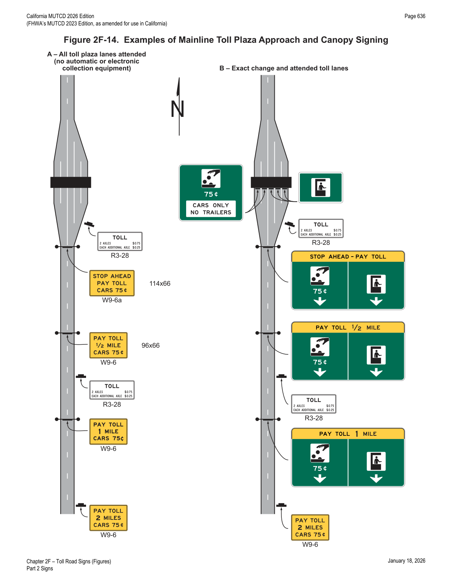
2F.15Advance Signs for Toll Plazas on Diverging Alignments from Open-Road ETC Account-Only Lanes
- 01Open-Road ETC lanes are sometimes located on the normal mainline alignment while lanes for other toll payment methods are located at a toll plaza on a separate alignment (see Figure 2F-15). Since road users paying cash tolls must diverge from the mainline alignment, similar to an exit movement, it is important that guide signs in advance of and at the point of divergence clearly indicate required lane use and/or movements.
- 02For toll plazas on a separate alignment diverging from mainline-aligned Open-Road ETC lanes where vehicles must have a registered ETC account to use the Open-Road Tolling lanes, overhead advance signs should be provided at approximately 1 mile and ½ mile in advance of the divergence point. Both the 1-mile and ½-mile advance signs should include: (A) the ETC (pictograph) Account-Only guide sign (see Figures 2F-9 and 2F-15) with a down arrow over the approximate center of each lane that will become an Open-Road ETC lane; (B) for the lane(s) which will diverge to a toll plaza, guide signs conforming to Section 2F.12 indicating which lane(s) will diverge to the toll plaza for the various cash toll payment methods; and (C) regulatory signs, plaques, or panels within the guide signs, indicating any restrictions or prohibitions of certain vehicle types from toll plaza lanes associated with the various payment methods.
- 03At or near the theoretical gore of the divergence point, an additional set of overhead guide signs should be provided and should include: (A) the ETC (pictograph) Account-Only guide sign (see Figures 2F-9 and 2F-15) with a down arrow over the approximate center of each Open-Road ETC lane; (B) guide signs conforming to Sections 2F.12 and 2F.13, with diagonally upward-pointing directional arrow(s) over the approximate center of each lane indicating the direction of divergence and providing lane information for all payment methods accepted at the toll plaza; and (C) regulatory signs, plaques, or panels indicating restrictions or prohibitions on toll plaza lane use by certain vehicle types.
- 04Approximately 800 feet in advance of the toll plaza, at a location that avoids or minimizes obstruction of the toll plaza canopy signs (see Section 2F.16) and lane-use control signals, an additional set of overhead advance signs with lane information for toll payment types should be provided.
- 05The use of down and directional arrows on the signs at the locations described in Paragraphs 2 through 4 shall comply with Section 2D.08.
- 06Figure 2F-15 shows an example of advance signs for toll plazas on a diverging alignment from Open-Road ETC Account-Only Lanes.
- 07Section 4R.02 contains information regarding the use of lane-use control signals for Open-Road ETC lanes for temporary lane closure purposes.
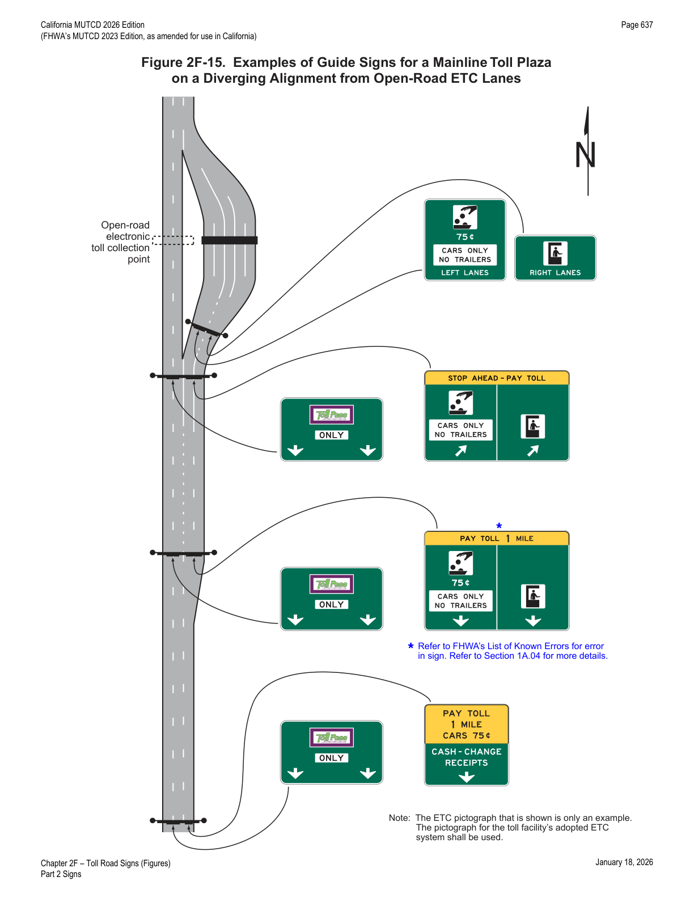
2F.16Toll Plaza Canopy Signs
- 01A sign complying with Section 2F.12 shall be provided above the approximate center of each lane that is not an Open-Road ETC lane, mounted on or suspended from the toll plaza canopy, or on a separate structure immediately in advance of the plaza located such that each sign is clearly related to an individual toll lane, indicating the payment type(s) accepted in the lane and any restrictions or prohibitions of certain vehicle types that apply. Except for toll-ticket systems, the toll for passenger or 2-axle vehicles shall be included on the canopy sign or on a separate sign mounted on the upstream side of the tollbooth.
- 02The background color of a canopy sign for an ETC Account-Only toll plaza lane shall be purple (see Figure 2F-16).
- 03Where vehicles must have a registered ETC account to use the lane, one or two flashing yellow beacons (see Section 4R.03) may supplement a canopy sign over an ETC Account-Only lane to call special attention to that lane's location within the plaza.
- 04The canopy sign for an ETC Account-Only toll plaza lane in which a regulatory speed limit is not posted and in which vehicles are not required to stop may display an advisory speed within a horizontal rectangular panel with a black legend and yellow background within the bottom portion of the canopy sign.
- 05Flashing beacons supplementing a canopy sign over an ETC Account-Only lane shall be mounted directly above or alongside the sign in a manner separated from any lane-use control signals for that lane (see Figure 2F-16).
- 06For multi-lane toll plazas, lane-use control signals (see Section 4R.02) shall be provided above the approximate center of each toll plaza lane that is not an Open-Road ETC lane to indicate the open or closed status of each lane. Lane-use control signals shall not be used to call attention to a lane for a specific toll payment type such as ETC Account-Only lanes.
- 07Part 6 contains information regarding the closing of a lane for temporary traffic control purposes.
- 08Figure 2F-16 shows examples of toll plaza canopy signs.
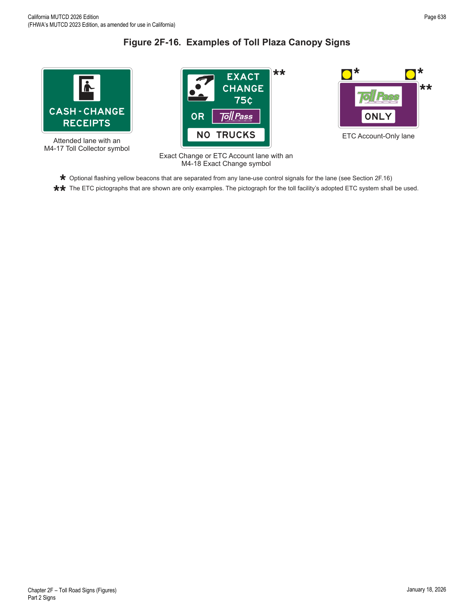
2F.17Guide Signs for Entrances to Electronic Toll Collection (ETC) Only Facilities
- 01Some toll highways, bridges, and tunnels are restricted to use only by vehicles with a specific registered ETC account, referred to as ETC Account-Only facilities. Other facilities collect tolls electronically using license plate character recognition, in which the registered vehicle owner is billed by postal mail; registration in an ETC account program is not required but could be an optional payment method. These facilities are commonly referred to as All-Electronic Tolling (AET) or Cashless Tolling.
- 02Guide signs for facilities that only collect tolls electronically shall comply with the applicable provisions of Chapter 2E and Section 2F.13.
- 03Guide signs for the entrance ramps to ETC Account-Only facilities shall incorporate the pictograph of the toll facility's primary ETC payment system and the word ONLY in a header panel or plaque designed in accordance with Section 2F.13 (see Figure 2F-8).
- 04A separate information sign displaying the route number, the TOLL warning panel (see Section 2F.11), and the legend NO CASH may be located within the sequence of Advance guide signs on the approach to the entrance to an ETC Account-Only facility.
- 04aRefer to FHWA's List of Known Errors for an error in Paragraph 4. Refer to Section 1A.04 for more details.
- 05Exit Gore signs for entrance ramps to such ETC Account-Only facilities may incorporate the pictograph of the toll facility's ETC payment system and the word ONLY in a header panel or plaque designed in accordance with Section 2F.13 (see Figure 2F-13 and Drawing B in Figure 2F-12).
- 06If more than one ETC account program is accepted for toll payments on an ETC Account-Only facility, the additional accepted ETC account program pictographs may be displayed on a separate informational guide sign with the legend ALSO ACCEPTED, within the sequence of advance guide signs for the entrance to the facility.
- 07Section 2F.05 contains information regarding ETC Account-Only signs and plaques for use with route signs in route sign assemblies.
- 08Where vehicles are not required to have a registered ETC account to use an ETC-Only facility, guide signs for the facility shall comply with the applicable provisions of Chapter 2E and specifically Section 2F.13.
- 09Advance and Exit Direction guide signs for the entrances to facilities that do not require registration in an ETC toll account program shall not display a pictograph of an accepted ETC payment system or use purple as a background color on any portion of the signs.
- 10Information on accepted toll payment methods for a facility that does not require registration in an ETC toll account program shall only be provided on a separate informational guide sign, if used, that displays one of the following legends (see Drawing C in Figure 2F-12): (A) TOLL BILLED BY MAIL ONLY, if there is no alternative payment method; or (B) TOLL BILLED BY MAIL OR [ETC Account Pictograph], if the facility also accepts payments from registered users of an ETC account program.
- 11If there is more than one ETC toll account program accepted, all ETC account program pictographs of the accepted ETC accounts may be displayed on the separate informational guide sign below the TOLL BILLED BY MAIL OR legend. A plaque with the legend NO CASH may be added below the signs described in Paragraph 10.
- 12The signs described in Paragraph 10 should be located within the sequence of Advance Guide signs for the entrance to the facility and/or at a location along the facility itself (see Drawing C in Figure 2F-12).
- 13If the ETC-Only facility also accepts payments from multiple ETC account programs, but does not require registration in the primary ETC account program associated with the facility in order to use the facility, then the pictographs of the other accepted ETC account programs may be displayed on the separate information sign beneath the legend TOLL BILLED BY MAIL and the word OR.
- 14If, in addition to a toll, a nominal surcharge (not a fine, penalty, or violation) is assessed to road users not registered in the toll account program, or registered toll account users are assessed a discounted toll, such information may be displayed on a separate information sign on the approach to the entrance to the facility.
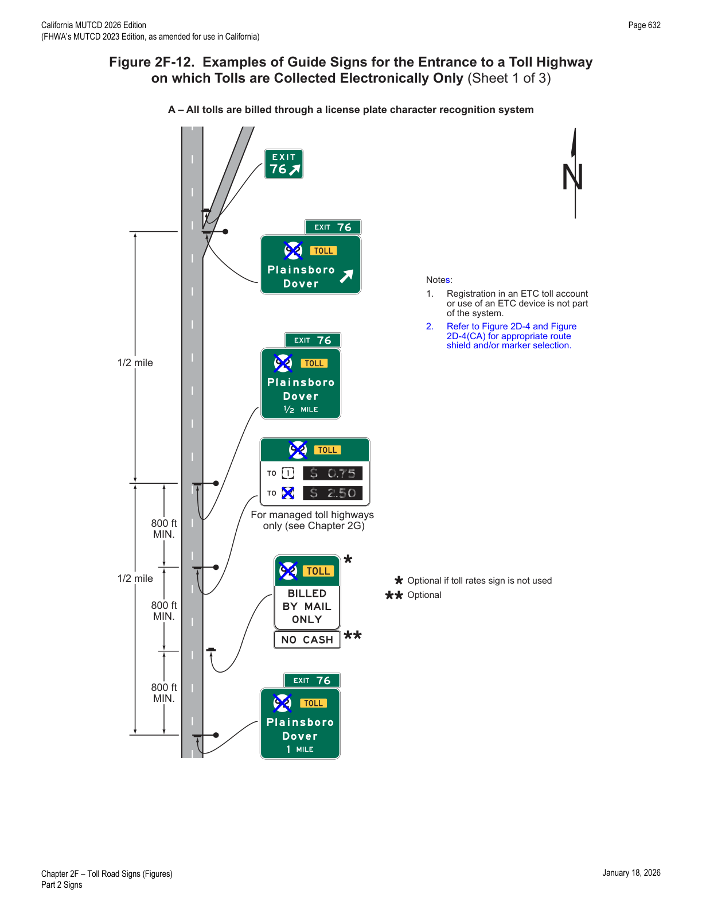
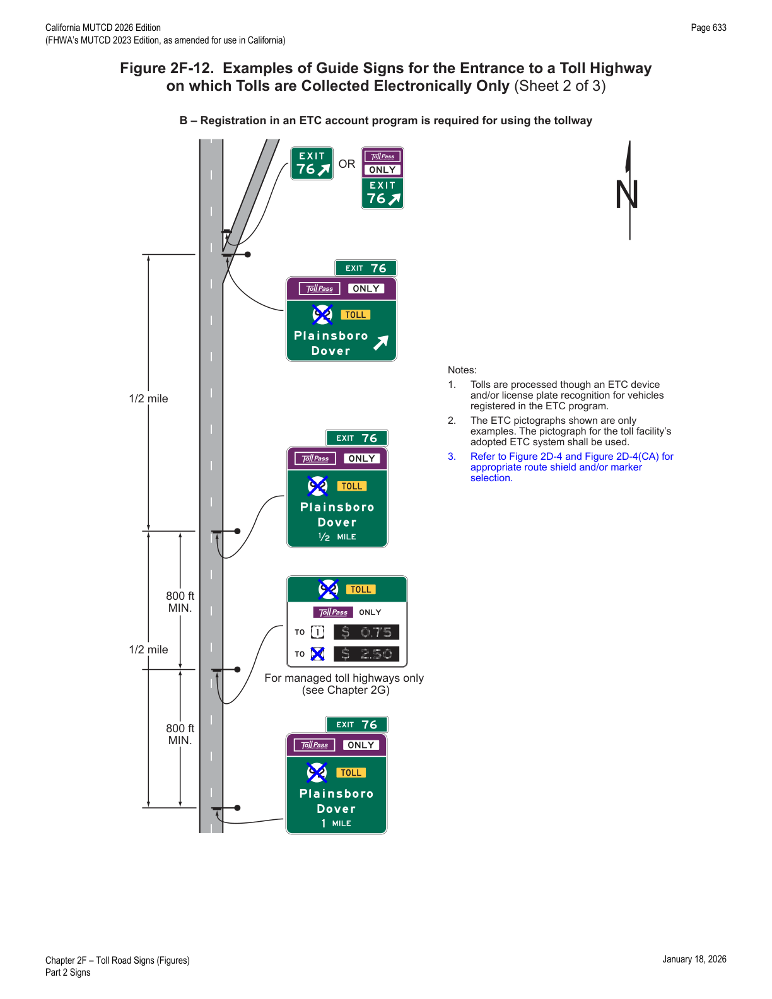
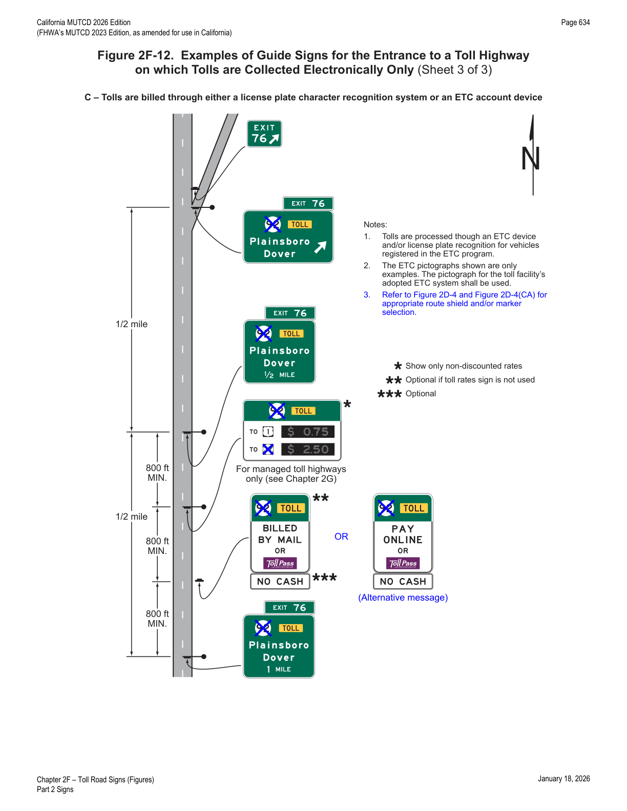
2F.18Guide Signs for ETC-Only Entrance Ramps to Non-Toll Highways
- 01In some cases, access to or from a non-toll route might be provided by a ramp on which a toll is charged in order to manage congestion, limit access, or for other reasons. The toll ramp might be provided as an alternative to or in lieu of a ramp providing similar access without charging a toll. Figures 2F-8 and 2F-13 show examples of guide signs for a ramp on which a toll is charged to enter a non-toll route.
- 02Guide signs for ETC-Only Entrance Ramps to non-toll highways shall comply with Section 2F.17.
- 03A NO TOLL panel with a black legend and yellow background may be included on the top section of the Exit Gore sign for an exit that provides access to the facility without charging a toll.
- 04Refer to FHWA's List of Known Errors for an error in Paragraph 3. Refer to Section 1A.04 for more details.
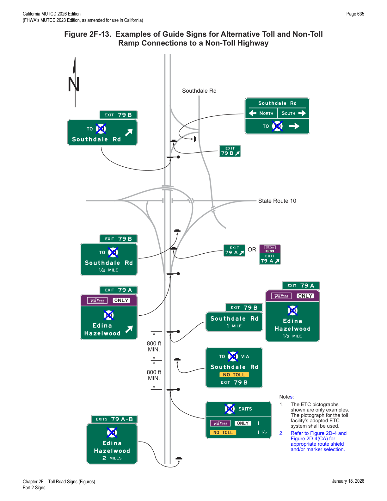
2F.19ETC Account Program Information Signs
- 01Except as provided in Paragraph 2, signs that inform road users of telephone numbers, Internet addresses (including domain names and URLs), or e-mail addresses for enrolling in an ETC account program of a toll facility or managed lane, obtaining an ETC transponder, and/or obtaining ETC account program information shall only be installed in rest areas, parking areas, or similar roadside facilities where the signs are viewed only by pedestrians or occupants of parked vehicles.
- 02ETC account program information signs displaying telephone numbers that have no more than four characters may be installed on roadways in locations where they will not obscure the road user's view of higher priority traffic control devices and that are removed from key decision points where the road user's view is more appropriately focused on other traffic control devices, roadway geometry, or traffic conditions — including exit and entrance ramps, intersections, toll plazas, temporary traffic control zones, and areas of limited sight distance.
2F.101(CA)TOLL BRIDGE Advance Warning Sign (SW95(CA))
- 01The TOLL BRIDGE (SW95(CA)) Advance Warning sign (see Figure 2F-102(CA)) shall have a black legend and border on a yellow background and shall be installed in advance of a toll bridge in both directions of travel, regardless of whether only one direction is tolled. The SW95(CA) sign shall display the distance to the start of the toll bridge.
- 02The SW95(CA) sign should be installed as an overhead sign approximately 1 mile in advance of the mainline approach to the toll bridge.
- 03An alternate one-line message, such as "AHEAD", may be used in place of the distance on line 3 of the SW95(CA) sign.
- 04An additional SW95(CA) sign may be installed approximately 2 miles in advance of a mainline approach to the toll bridge. This sign may be mounted either overhead or post-mounted.
- 05The TOLL BRIDGE Advance Warning sign is used to notify road users that they are approaching or crossing a toll bridge. Refer to CVC § 23300.
- 06If no toll is charged in a particular direction of travel, a NO TOLL (SW95aP(CA)) plaque (see Figure 2F-102(CA)) shall be mounted directly below the SW95(CA) sign in that direction to indicate access to the facility without a toll charge. The SW95aP(CA) plaque shall have a black legend and border on a yellow background.
- 07The SW95aP(CA) plaque may be formatted as a footer panel at the bottom portion of the SW95(CA) sign.
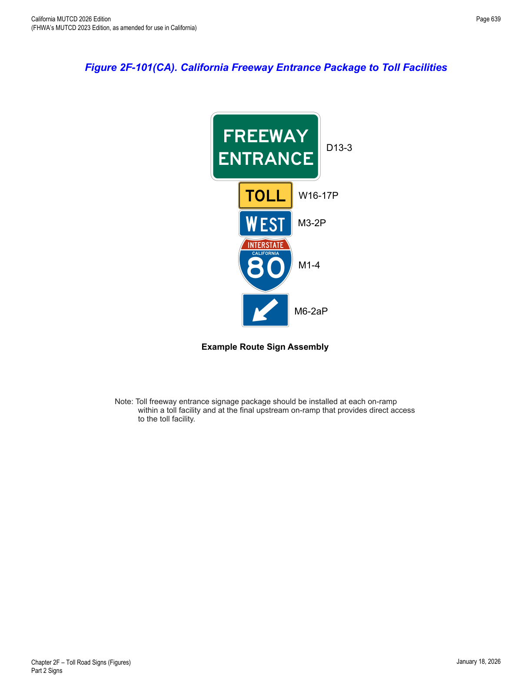
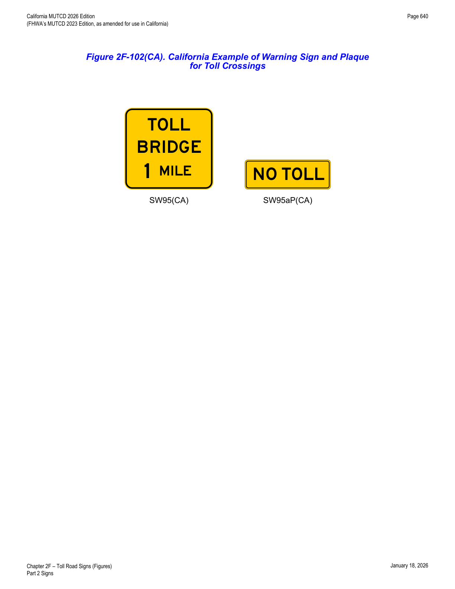
| Sign or Plaque | Designation | Section | Conv. Road — Single Lane | Conv. Road — Multi-Lane | Expressway / Freeway — Minimum | Expressway / Freeway — Oversized |
|---|---|---|---|---|---|---|
| Toll Rate | R3-28 | 2F.04 | — | — | 114 x 48 | 114 x 48 |
| Pay Toll (plaque) | R3-29P | 2F.04 | — | — | 24 x 18 | 24 x 18 |
| Take Ticket (plaque) | R3-30P | 2F.04 | — | — | 24 x 18 | 24 x 18 |
| ETC Account-Only | R3-31 | 2F.05 | 24 x 24 | 24 x 24 | 36 x 36 | 36 x 36 |
| No Cash (plaque) | R3-32P | 2F.05 | 24 x 12 | 24 x 12 | 36 x 18 | 36 x 18 |
| Pay Toll XX Miles Cars (price) | W9-6 | 2F.06 | 96 x 66 | 96 x 66 | 96 x 66 | 96 x 66 |
| Stop Ahead Pay Toll Cars (price) | W9-6a | 2F.08 | 114 x 66 | 114 x 66 | 114 x 66 | 114 x 66 |
| Pay Toll XX Miles Cars (price) (plaque) | W9-6bP | 2F.07 | 312* x 30 | 312* x 30 | 312* x 30 | 312* x 30 |
| Stop Ahead Pay Toll (plaque) | W9-6cP | 2F.09 | 264* x 30 | 264* x 30 | 264* x 30 | 264* x 30 |
| Stop Ahead Pay Toll (plaque) | W9-6dP | 2F.09 | 114 x 48 | 114 x 48 | 114 x 48 | 114 x 48 |
| Take Ticket XX Miles | W9-6e | 2F.06 | 114 x 48 | 114 x 48 | 114 x 48 | 114 x 48 |
| Stop Ahead Take Ticket | W9-6f | 2F.08 | 114 x 48 | 114 x 48 | 114 x 48 | 114 x 48 |
| Take Ticket XX Miles (plaque) | W9-6gP | 2F.07 | 216 x 30 | 216 x 30 | 216 x 30 | 216 x 30 |
| Stop Ahead Take Ticket (plaque) | W9-6hP | 2F.09 | 282 x 30 | 282 x 30 | 282 x 30 | 282 x 30 |
| Last Exit Before Toll (1-line plaque) | W16-16P | 2F.10 | — | — | 252* x 36 | 252* x 36 |
| Last Exit Before Toll (2-line plaque) | W16-16aP | 2F.10 | — | — | 144 x 54 | 144 x 54 |
| Toll (plaque) | W16-17P | 2F.11 | 24 x 12 | 24 x 12 | 36 x 18 | 36 x 18 |
| Toll Collector Symbol Panel | M4-17 | 2F.12 | — | — | 48 x 48 | 48 x 48 |
| Exact Change Symbol Panel | M4-18 | 2F.12 | — | — | 48 x 48 | 48 x 48 |
| Sign or Plaque | Designation | Section | Conv. Road — Single Lane | Conv. Road — Multi-Lane | Expressway / Freeway — Minimum | Expressway / Freeway — Oversized |
|---|---|---|---|---|---|---|
| NO TOLL (plaque) | SW95aP(CA) | 2F.101(CA) | 54 x 18 | 54 x 18 | 72 x 24 | 72 x 24 |
| TOLL BRIDGE XX MILES | SW95(CA) | 2F.101(CA) | 54 x 48 | 54 x 48 | 72 x 66 | 72 x 66 |
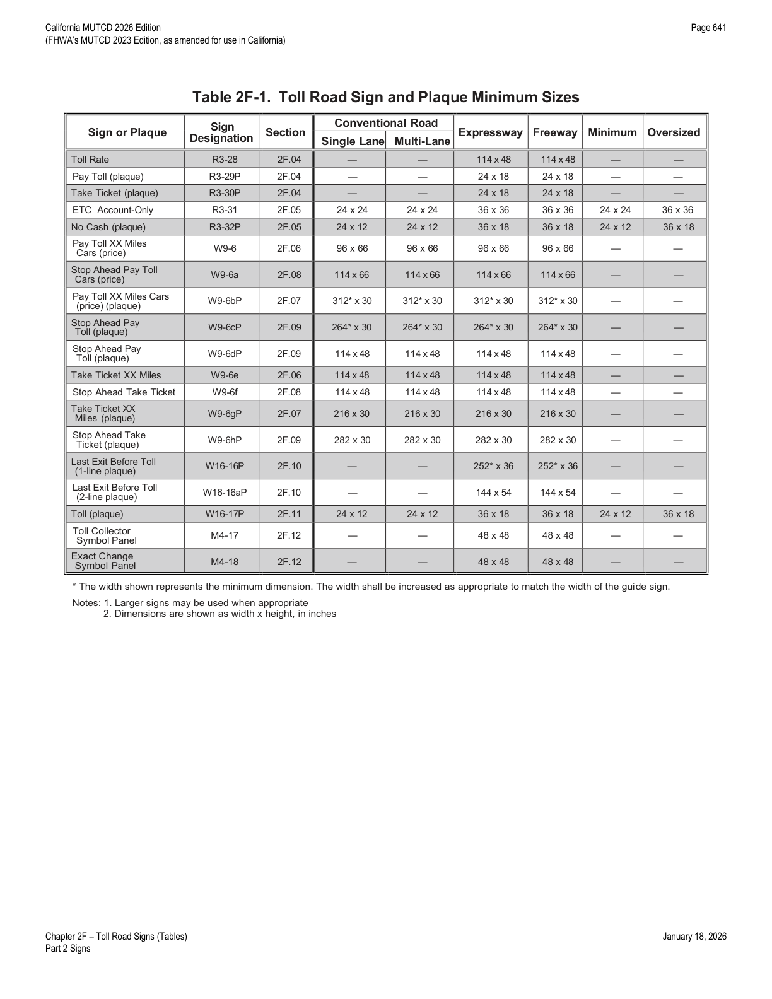
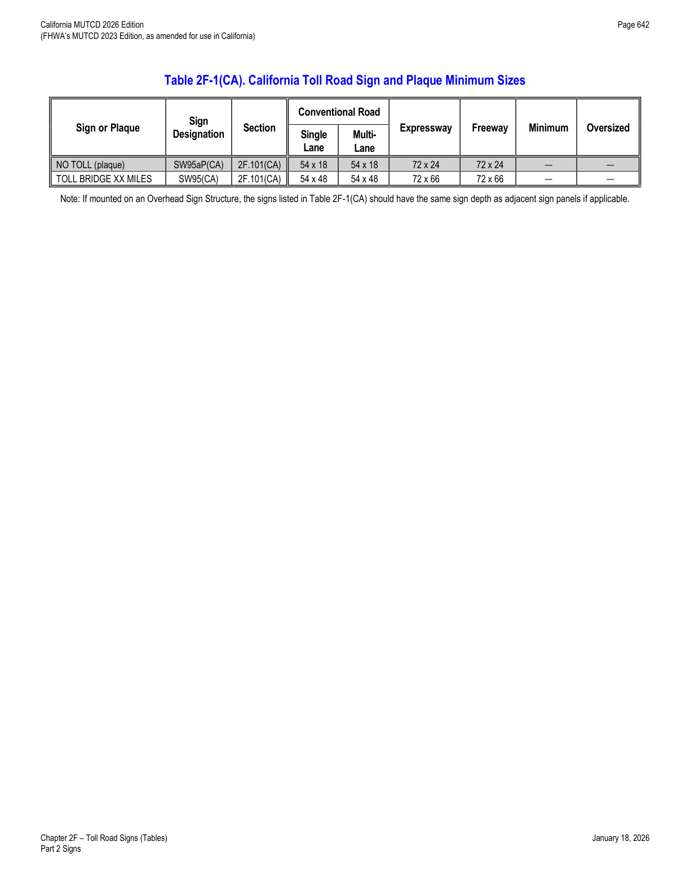
★ Key Takeaways — Chapter 2F
- Purple is a reserved color: it appears only to indicate an ETC-Account-Only requirement (background, underlay panel, header panel, or plaque) — never as general branding or a destination/action legend.
- The TOLL (W16-17P) warning plaque and TOLL rectangular panel (or the alternative State Toll Route sign incorporating the word TOLL) must clearly flag any route sign assembly or guide sign leading to a tolled facility; Interstate, Off-Interstate, and U.S. Route shields themselves are never modified for tolling.
- Regulatory panels within guide signs are black-on-white; warning panels within guide signs are black-on-yellow — this convention is used throughout to fold STOP/payment/restriction messages into toll guide signs.
- Advance signing sequences are distance-driven: W9-6/W9-6e at 1 mile and ½ mile (optionally 2 miles), W9-6a/W9-6f downstream of the ½-mile sign, and further guide signs between ¼ mile and 800 ft of the plaza; diverging Open-Road ETC configurations add a set at the theoretical gore.
- M4-17 (Toll Collector) and M4-18 (Exact Change) symbol panels may only be used as panels within guide signs — never as standalone signs.
- California adds a unique TOLL BRIDGE (SW95(CA)) advance warning sign and NO TOLL (SW95aP(CA)) plaque (Section 2F.101(CA)), plus a Freeway Entrance Package (Figure 2F-101(CA)) for on-ramps to toll facilities, referencing Vehicle Code § 23300.